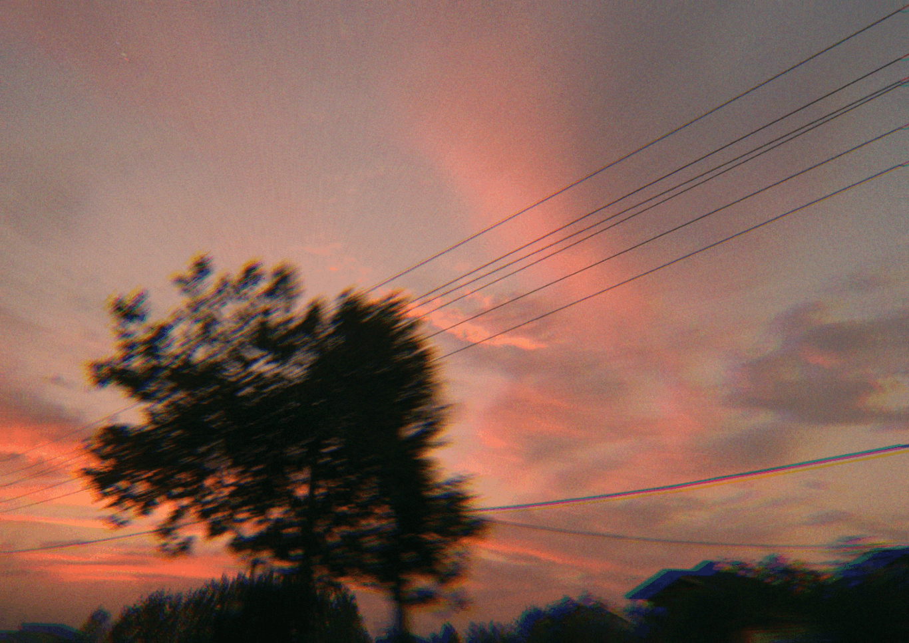

Hi, I'm Hassan.
Welcome to my corner of the internet.

etherealI usually write here about technology and my work, and sometimes about random stuff.
If you want to get in touch, about anything, you can email me anytime.
A Little About Me
I'm mostly focused on system tools, low-level concepts, and
programming languages.
Currently, I'm using Odin and
actually enjoying programming again.
I've also done some work in the Rust ecosystem.
Aside from coding, I love playing the piano and taking pictures. I may
not be great at any of them, but without art, life's just meaningless,
don't you think?